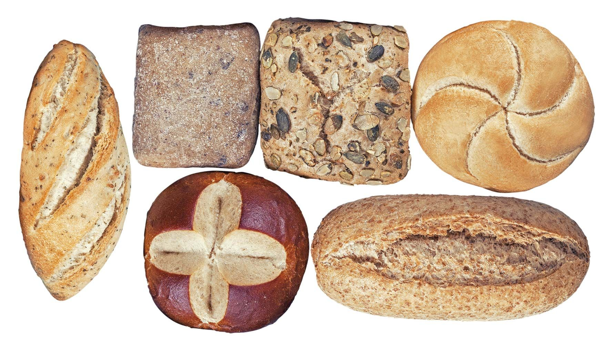
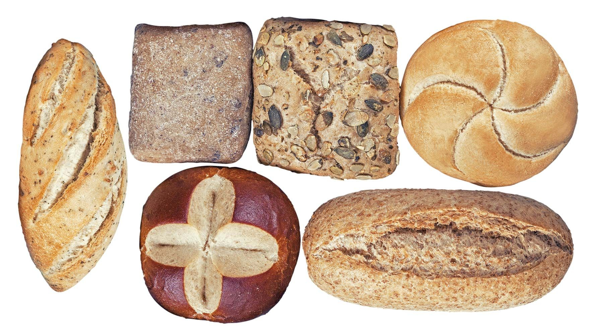
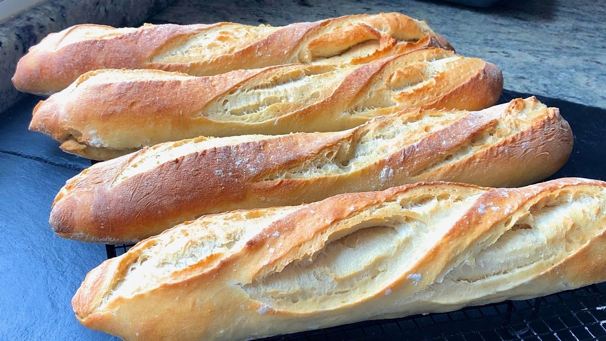
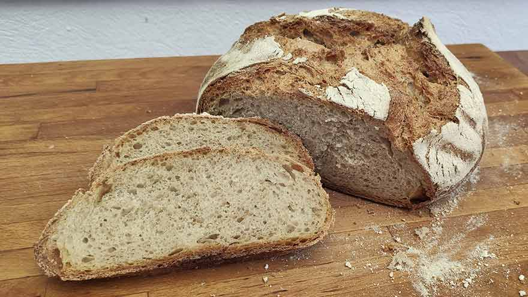

PANADERIAS LC COMPANY
 

Baguette
El pan baguette francés o simplemente baguette francesa, es un pan blanco largo y delgado (70 a 80 centímetros), de corteza dorada y crujiente, de miga tierna y ligera, reconocido en todo el mundo por su nombre.
Pan Payes
El pa de pagès (pronunciado /pa ðə pa'ʒes/), en castellano pan de payés (a veces también pa de poble «pan de pueblo» o pa rústic «pan rústico») es una variedad de pan certificado IGP típica de la gastronomía de Cataluña, también común en las Islas Baleares y la Comunidad Valenciana.